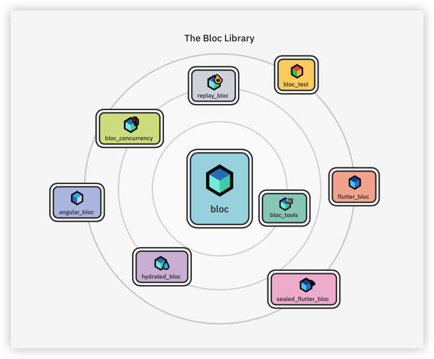
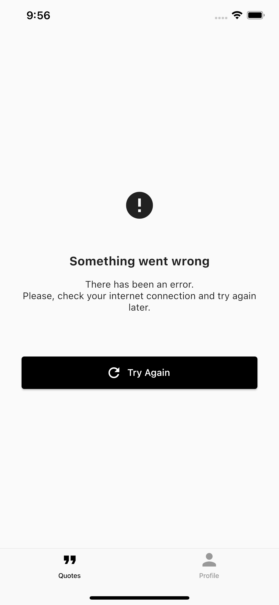
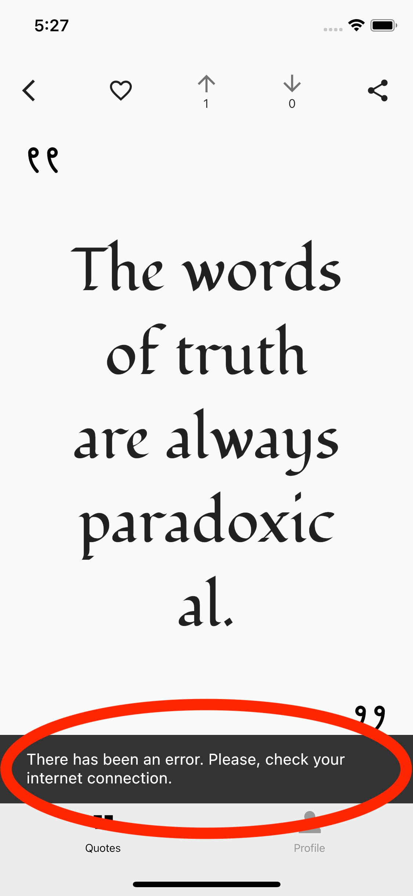
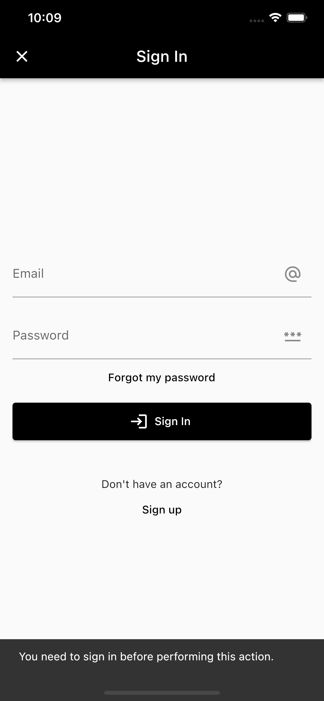

3 Managing State With Cubits & the Bloc Library¶
Spend five minutes on FlutterDev, the largest Flutter online forum, and you’ll notice a curse-like phenomenon: Once every three days, someone has to come in and ask: “What’s the best state management approach?” or “Should I learn BLoC or Riverpod?”
The community’s obsession with state management has gotten to a state — no pun intended — where people have started believing it’s a Flutter issue rather than a computer science one. The truth is, state management is part of programmers’ lives from the moment they start turning bits on and off — most people just use other names for it.
State management is the price you pay for interactivity. If your app responds to user input, you’re managing state.
State is the condition of your app at any given moment. When the user taps a button that takes them to another screen, your app is in a different condition — that is, a different state. If the screen has an empty text field, typing something into that field takes your app to a different state.
The question is, then, “What’s the best approach to manage all those state transitions in your code?” And the curse has struck again…
The commonsense answer to that question is: “It depends on your needs”, or “There isn’t a single best approach for every situation”. This book has already used the “It depends on the situation” card a few times, but this is not solid advice when it comes to state management. It implies you’d have to learn several approaches so you could build the necessary judgment to pick the best one for each situation. And while that would be awesome, it’s just not realistic. It’s not real-world.
This book gets off the fence and advocates for the BLoC pattern. Now, this doesn’t mean it’s the best approach for every situation — there really isn’t such a thing. That part of the advice above checks out. This book advocates for the BLoC pattern because it’s been pretty darn good for all the situations the authors have experienced, and that’s more than one could ask for.
The top complaint on the internet about BLoC is its alleged “high learning curve”. But then, even if that’s true, isn’t learning the whole reason you’re here?
This chapter is the first of a three-chapter journey that will give you expert-level knowledge about implementing the BLoC pattern using the Bloc Library. You’ll start by building a Cubit, which is a simplified version of a Bloc. Along the way, you’ll also learn:
What BLoC really is. Which problem it solves. How it solves that problem. The difference between a Bloc and a Cubit. How to model your screens’ states. How to fetch and send data using a Cubit.
While going through this chapter, you’ll work on the starter project from this chapter’s assets folder.
Defining BLoC¶
BLoC stands for business logic components and is a design pattern introduced by Google in 2018. It first came out as the state management solution that enabled code sharing between Flutter (mobile) and Angular (web) back before Flutter web was a thing. Since then, the community has proven the pattern to be way more powerful than that.
To be clear, BLoC is a design pattern, not a package — contrary to what many think. Any packages you may stumble upon that contain the word “bloc” in their names are there just to help you implement the pattern, and you can choose to use them or not. It’s similar to how dependency injection is just a pattern, and you can choose whether or not to use a package to implement it.
The reason many people think BLoC is a package instead of a pattern is that a package named bloc has stood out in the community to the point where it’s as popular as the pattern itself. That recognition is well deserved — the package is fantastic.
The bloc package is also more properly referred to as the Bloc Library. Strictly speaking, Bloc Library is a broader term that encompasses both the bloc package and some satellite packages that originated from it.
Note
Notice the different names and casing conventions: BLoC is the pattern. Bloc Library is the family of packages that help you implement the pattern. bloc is the core package of that family. Bloc is the entity in your code – the classes you create – as in “the Bloc that manages that screen”.
It’s rare for a Flutter app to use the bloc package directly. Typically, you’d use it through one of its children packages. In WonderWords, for example, you’ll use bloc through flutter_bloc and bloc_test.

You were just reading about how you don’t need any packages to work with the BLoC pattern, so why does WonderWords use the Bloc Library?
For the many amenities it provides, like testing tools. For the community support you gain from it. A quick search in their repo’s issuescan get you multiple answers to any problem you might run into in the future.
Now, you know what the BLoC pattern is, what it isn’t, and which tools you’ll use to work with it. So now, take a step back and consider why you actually need BLoC at all.
Positioning BLoC in a Codebase¶
The mechanics of all user-facing apps boil down to three steps:
- Take user input. For example, taps on a button or insertions into a text field.
- Do magic in the middle, known as business logic. After you receive some user input, you’ll want to do something in reaction to it, right? That something usually involves talking to an external source or validating the text field’s value.
- Render the new state of the app. In other words, show something different to the user after you’ve processed their input.
Note
In Flutter, the middle part is the only one where you have total freedom regarding where you can put your code. Step one has to happenin the widget layer — from a widget’s onTap or onChange callback, for example. Step three also has to happen in the widget layer, this time by returning the appropriate widgets from the build() function. On the other hand, step two’s code is a breeze. You can keep it in the widget layer — inside a StatefulWidget — or you can place it anywhere else, like inside a state manager, for example. How you end up handling it is what defines your app’s architecture.
The BLoC pattern is nothing but a proposal about how to structure that middle part.
BLoC stands for Business Logic Component. Replace “component” with “class” and, combined with what you just learned, you have: A class to delegate anything that is nottaking user input and rendering the output.
Note
To be fair, that’s essentially what all state management approaches are. What usually changes from one approach to another are the rules behind that communication between the widget and the state manager.
Speaking and Listening to a Bloc¶
In the BLoC world, user inputs are called events. For illustrative purposes only — don’t insert this anywhere — this is how a widget would forward an event to a Bloc or a Cubit, which is just a simplified Bloc:
// 1
UpvoteIconButton(
// 2
onTap: () {
// 3
bloc.add(
QuoteUpvoted(),
);
// OR
// 4
cubit.upvoteQuote();
},
)
Here’s the complete breakdown:
UpvoteIconButtonis a widget from WonderWords that will serve as a model here.- You provide an
onTapcallback toUpvoteIconButtonto capture the user input. - You then forward that event to a bloc by calling
add()on it and passing an object to it. Don’t worry about the details for now. From here on, you’ll work exclusively with Cubits – the simplified Blocs – and leave the actual Blocs for Chapter 5, “Managing Complex State with Blocs”. - Can you see how just forwarding an event to a Cubit is already simpler than doing the same to a Bloc? Starting with Cubits will help you build the confidence to move on to complex Blocs in Chapter 5, “Managing Complex State With Blocs”.
The Cubit then receives that event and processes it — by talking to a repository, for example. Then, it sends an object — the state — back to the widget layer. The state object contains all the information the UI needs to rebuild itself and reflect the new app’s state to the user.
This is how you listen to the states coming out of a Cubit:
@override
Widget build(BuildContext context) {
return BlocBuilder<QuoteDetailsCubit, QuoteDetailsState>(
builder: (context, state) {
if (state is QuoteDetailsSuccess) {
return _Quote(
quote: state.quote,
);
} else if (state is QuoteDetailsFailure) {
return ExceptionIndicator();
} else {
return CenteredCircularProgressIndicator();
}
},
);
}
Notice how BlocBuilder doesn’t care if you’re using a Cubit or a Bloc. In fact, a Cubit is a Bloc, just a simplified one.
BlocBuilder is a widget that comes from the flutter_bloc package. flutter_bloc is the member of the Bloc Library that makes the bridge between the base bloc package, which you could use in a pure Dart project, and the Flutter world, with all the widget-related stuff.
All BlocBuilder does is call the builder function for you whenever the Cubit — or Bloc — emits a new state object. You’ll get your chance to play with it in a couple of sections. For now, just start forming a picture in your head of how the big pieces connect.
Next, it’s time to get your hands dirty.
Creating the State Class¶
If you’ve done state management in the past with StatefulWidget and setState, or even Provider and ChangeNotifier, you’re probably used to having your screen’s state spread around multiple variables. For example:
class _QuoteDetailsScreenState extends State<QuoteDetailsScreen> {
bool _isLoading = true;
Quote? _quote;
dynamic _error;
@override
Widget build(BuildContext context) {
if (_isLoading) {
return CenteredCircularProgressIndicator();
} else if (_error != null) {
return ExceptionIndicator();
} else {
return _Quote(
quote: _quote!,
);
}
}
}
Your state here is determined by a combination of the _isLoading, _quote and _error properties. The problem with that is that it’s very easy to update one variable and forget to reset another, like:
Future<void> _fetchQuoteDetails() async {
setState(() {
_isLoading = true;
});
try {
final quote = await quoteRepository.getQuoteDetails(quoteId);
setState(() {
_isLoading = false;
_quote = quote;
_error = null;
});
} catch (error) {
setState(() {
_quote = null;
_error = error;
});
}
}
Can you spot what’s wrong with the code above? You forgot to set _isLoading to false in case an error happens. Should the UI, then, display a progress indicator, since _isLoading is true, or an exception indicator, since _error isn’t null?
That problem is known as a logical dependency. You know isLoading should be false if _error isn’t null. But nothing is physically preventing you from unintentionally breaking that rule and sending an ambiguous message.
With Blocs and Cubits, whenever you want to update your UI, you do so by emitting oneobject with all the information the UI needs to know to rebuild itself properly. In practice, that just means you have to get all your state variables together in a single class. For example:
class QuoteDetailsState {
QuoteDetailsState({
required this.isLoading,
required this.quote,
required this.error,
});
final bool isLoading;
final Quote? quote;
final dynamic error;
}
But still, the logical dependency issue remains — you can still have a non-null errorwhile isLoading is set to true. Not for long, though. You’re about to learn an easy fix for this.
Using Inheritance to Solve the Logical Dependency Issue¶
Open the starter project and use the terminal to run make get from the root folder. Wait for the command to finish, then navigate to the quote_details feature package: packages/features/quote_details.
Note
Ignore the errors on quote_details_screen.dart for now.
Open quote_details_state.dart in the lib/src folder. You’ll notice a part of directive at the top of the file. Leave that on hold until the next section.
Now, replace // TODO: Create models for all possible screen states. with:
// 1
abstract class QuoteDetailsState extends Equatable {
const QuoteDetailsState();
}
// 2
class QuoteDetailsInProgress extends QuoteDetailsState {
const QuoteDetailsInProgress();
// 3
@override
List<Object?> get props => [];
}
class QuoteDetailsSuccess extends QuoteDetailsState {
const QuoteDetailsSuccess({
required this.quote,
// TODO: Receive new property.
});
// 4
final Quote quote;
// TODO: Add new property.
@override
List<Object?> get props => [
quote,
// TODO: List new property.
];
}
class QuoteDetailsFailure extends QuoteDetailsState {
const QuoteDetailsFailure();
@override
List<Object?> get props => [];
}
Watch how this simple pattern solves the logical dependency issue you saw in the previous code snippet. Instead of having QuoteDetailsState hold the three variables, you made it an abstract class and broke it down into three separate concrete classes. Both approaches do the same thing, but now the logical dependencies have become physical. For example, you can’t have a Quote if the state is QuoteDetailsFailure.
Now, analyze the code above step by step:
- You defined a base
QuoteDetailsState, which isabstract, meaning you can’t instantiate it. It just serves as a common ancestor to the subsequent classes. - You then created three concrete children for
QuoteDetailsStatefrom the previous step:QuoteDetailsInProgress,QuoteDetailsSuccessandQuoteDetailsFailure. - You had to override
propsin all the children classes because the parentQuoteDetailsStateextendsEquatable. You’ll learn more about this in the next section. QuoteDetailsSuccessis the only class where having aquoteproperty makes sense.
Breaking your state down into multiple classes means there’s no room for ambiguity when you want to send a new state from your Cubit to your UI. You continue to have one state type, QuoteDetailsState, but now you have to use QuoteDetailsInProgress, QuoteDetailsSuccess or QuoteDetailsFailure to instantiate it.
That approach works like an enum on steroids. With it, your “enum values” — InProgress, Success and Failure — can have properties of their own, as happens for QuoteDetailsSuccess and the quote property.
Note
The suffixes in the classes’ names — InProgress, Success and Failure — follow the Bloc Library’s naming convention.
Now, there are only two things left for you to understand everything going on in the snippet above:
The Equatable class you’re extending from QuoteDetailsState.
That props property you’re overriding in QuoteDetailsState and QuoteDetailsSuccess.
Next, you’ll dive into that.
Comparing Objects in Dart¶
When you check if two objects are equal in Dart, as in bookA == bookB, the only thing you’re actually comparing by default is whether the two objects are the same instance, not if their properties have the same value. For example:
final bookA = Book(title: 'Real-World Flutter by Tutorials');
final bookB = Book(title: 'Real-World Flutter by Tutorials');
print(bookA == bookB); // prints false
If you wanted to make a real comparison where the output for the above is true, you’d have to implement two functions inside the Book class: == and hashCode. The problem is, overriding these functions is way more complex than it sounds.
The equatable package offers you a way out. With it, all you have to do is extend Equatable and then list the properties you want to include in the comparison by overriding props, just like you did in your code for QuoteDetailsState.
But why are you using Equatable in your Cubit’s state classes? Why would you need real comparisons in there? For two reasons:
Later, when you write your unit tests in Chapter 14, “Automated Testing”, you’ll want to be able to determine if the objects your cubit emits are what you expect them to be. If, for any reason, you end up emitting two equal objects in a row from your Cubit’s code, the Bloc Library will be able to internally disregard any duplicates and avoid unnecessary widget rebuilds.
Now that you’ve properly modeled your state classes, it’s time to jump into the Cubit’s code.
Creating a Cubit¶
Still in that same src directory, open quote_details_cubit.dart. Then, replace // TODO: Create the Cubit. with:
// 1
class QuoteDetailsCubit extends Cubit<QuoteDetailsState> {
QuoteDetailsCubit({
required this.quoteId,
required this.quoteRepository,
}) : super(
// 2
const QuoteDetailsInProgress(),
) {
_fetchQuoteDetails();
}
final int quoteId;
// 3
final QuoteRepository quoteRepository;
void _fetchQuoteDetails() async {
// TODO: Fetch data from QuoteRepository.
}
void refetch() async {
// TODO: Add a body to refetch().
}
void upvoteQuote() async {
// TODO: Add a body to upvoteQuote().
}
void downvoteQuote() async {
// TODO: Challenge.
}
void unvoteQuote() async {
// TODO: Challenge.
}
void favoriteQuote() async {
// TODO: Challenge.
}
void unfavoriteQuote() async {
// TODO: Challenge.
}
}
Except for leaving a bunch of TODOs for later, here’s what you just did:
- To create a Cubit, you have to extend
Cubitand specify your base state class as the generic type. The only reason you’re able to import theCubitclass in this file is because this quote_details package’s pubspec.yaml lists flutter_blocas a dependency. - When extending
Cubit, you have to call thesuperconstructor and pass an instance of your initial state to it. This value is what the Cubit will provide to the UI when the screen first opens. - You’ll use the
QuoteRepositoryyou created in the previous chapter.
Note
Remember the part of directive you had at the top of the previous quote_details_state.dart? This file now corroborates that with a partalso at the top.
The
partandpart ofcombination is a Dart tool that enables you to treat quote_details_state.dart as a continuation of this quote_details_cubit.dart file. Notice that, although you useEquatablein the state file, itsimportline is actually here in this one. Having files that extend one another like this has two significant advantages: 1.) Any files importing quote_details_cubit.dart immediately get access to everything in quote_details_state.dart. 2.) These two files can share private members, such as properties, classes and functions.
The entire backbone of your Cubit is ready. From now on, you’ll work on adding some meat to it.
Fetching Data¶
Continuing on your Cubit’s file, it’s time to give some love to that first _fetchQuoteDetails(). Replace // TODO: Fetch data from QuoteRepository.with:
try {
// 1
final quote = await quoteRepository.getQuoteDetails(quoteId);
// 2
emit(
QuoteDetailsSuccess(quote: quote),
);
} catch (error) {
emit(
const QuoteDetailsFailure(),
);
}
Here, you just:
- Used the
quoteIdreceived in the constructor to fetch the entireQuoteobject fromQuoteRepository. If you’re not familiar with theasync/awaitsyntax from Dart, you can read more about it in Dart’s documentation. - Called
emit()from within a Cubit, which is how you send new state objects to your widget layer. You’ll learn how to react to those from the UI side in the next section.
Notice you’re calling this _fetchQuoteDetails() from your constructor. That will cause your Cubit to fetch this data as soon as you open the screen.
Note
You didn’t have to emit() a QuoteDetailsInProgress at the beginning of the function because you already defined it as your initial state using the super constructor.
Responding to User Input¶
If you get an error from QuoteRepository when trying to fetch a quote, the code you just wrote handles that error by emitting a QuoteDetailsFailure state. Your UI will then reflect that state by showing a classic “Something went wrong” widget:

As you can see, this widget has a Try Again button that the user can use to try fetching the quote again. If the user taps that button, its onTap callback is set to call refetch(), which you declared in your Cubit. That’s a perfect example of a user input— or an event, in BLoC terminology — being forwarded to a Cubit.
The only problem is, right now, refetch() doesn’t do anything. Change this by replacing // TODO: Add a body to refetch(). with:
// 1
emit(
const QuoteDetailsInProgress(),
);
// 2
_fetchQuoteDetails();
That’s all. You just had to:
- Reset your Cubit to its initial state,
QuoteDetailsInProgress, so the UI shows the progress indicator again. - Recall the function you created in the previous section to fetch the quote from
QuoteRepository.
Now, it’s time to step to the other side of the curtain and see how to handle those state emissions from your widgets.
Consuming a Cubit¶
Still in the same folder as your Cubit, open quote_details_screen.dart and scroll down to the QuoteDetailsView widget. Inside the build() function, replace:
return StyledStatusBar.dark(
child: Placeholder(),
);
With:
return StyledStatusBar.dark(
child: BlocBuilder<QuoteDetailsCubit, QuoteDetailsState>(
builder: (context, state) {
return const Placeholder();
},
),
);
This is how you listen to the states coming out of a Cubit. Again, notice there’s no CubitBuilder, only BlocBuilder. Never forget: A Cubit is a Bloc.
In your BlocBuilder above, you used the angle brackets — <> — to specify two generic types:
The type of the Cubit you want to listen to: QuoteDetailsCubit.
The type of the state objects coming out of that Cubit: QuoteDetailsState.
Next, you passed in a function to the builder property. That function will run every time your Cubit emits a new state. You’ll use the provided state object to infer the current state and then return the widget that correctly portrays that state.
Right now, you’re just returning a Placeholder, regardless of what the current state is. Change that by replacing that return const Placeholder(); with:
return WillPopScope(
onWillPop: () async {
// 1
final displayedQuote =
state is QuoteDetailsSuccess ? state.quote : null;
Navigator.of(context).pop(displayedQuote);
return false;
},
child: Scaffold(
// 2
appBar: state is QuoteDetailsSuccess
? _QuoteActionsAppBar(
quote: state.quote,
shareableLinkGenerator: shareableLinkGenerator,
)
: null,
body: SafeArea(
child: Padding(
padding: EdgeInsets.all(
WonderTheme.of(context).screenMargin,
),
// 3
child: state is QuoteDetailsSuccess
? _Quote(
quote: state.quote,
)
: state is QuoteDetailsFailure
? ExceptionIndicator(
onTryAgain: () {
// 4
final cubit = context.read<QuoteDetailsCubit>();
cubit.refetch();
},
)
// 5
: const CenteredCircularProgressIndicator(),
),
),
),
);
Now that was something! Going over it step by step:
- The
WillPopScopewidget allows you to intercept when the user tries to navigate back from the screen. You’re using that to send the current quote back to the home screen if the current state is aQuoteDetailsSuccess. That’s necessary so the previous screen can check whether the user has favorited or unfavorited that quote and use that to also reflect that change accordingly. None of that has to do with BLoC specifically; it’s just how WonderWords’ inter-screen communication works. More on this in Chapter 7, “Routing & Navigating”. - Here, you’re inspecting the
stateobject to update your UI accordingly. If thestateis anything other than a success, you don’t show the app bar. - You’re doing the same thing you did in the previous step, but now for the bulk of the screen’s content.
BlocBuildergives you thatstateobject inside thebuilder, but it doesn’t give you the actual Cubit in case you want to call a function — send an event — on it. Using thiscontext.read<YourCubitType>()is how you get the instance of your Cubit to call functions on it.- If the state is neither a
QuoteDetailsSuccessnor aQuoteDetailsFailure, you know for sure it’s aQuoteDetailsInProgress.
You’re almost there! You just need to perform one last step before building and running your project.
Providing a Cubit¶
You’d get an error if you tried building and running your project now. That’s because your BlocBuilder<QuoteDetailsCubit, ...> doesn’t have an actual QuoteDetailsCubit instance to work with yet; specifying it as the generic type isn’t enough.
You could solve this by simply passing an instance of your Cubit to the BlocBuilder‘s bloc property, but there’s a better way. The official recommendation is to place a BlocProvider widget anywhere above your BlocBuilder in the widget tree. By doing this, you’ll leverage the widget tree to make the Cubit instance available internally.
To see how this looks in practice, jump up to the QuoteDetailsScreen widget in the same quote_details_screen.dart file. Inside the build() function, replace:
return QuoteDetailsView(
onAuthenticationError: onAuthenticationError,
shareableLinkGenerator: shareableLinkGenerator,
);
With:
return BlocProvider<QuoteDetailsCubit>(
create: (_) => QuoteDetailsCubit(
quoteId: quoteId,
quoteRepository: quoteRepository,
),
child: QuoteDetailsView(
onAuthenticationError: onAuthenticationError,
shareableLinkGenerator: shareableLinkGenerator,
),
);
Done! That will make not only your BlocBuilder work, but also the context.read<QuoteDetailsCubit>() calls you have down below in your code. In fact, what BlocBuilder uses internally is exactly a context.read() call just like yours.
Note
That strategy of using a special type of widget to make an object available internally through the BuildContext is a pattern that’s used a lot in Flutter: Theme.of(context), Navigator.of(context), etc. Chapter 10, “Dynamic Theming & Dark Mode”, will go deep into that pattern.
Build and run the project using the custom running configuration you created in the first chapter. Tap any quote on the home screen and make sure your quote shows up as intended.
Note
The app bar buttons won’t work just yet. That’s next on your list.

Note
If you’re having trouble running the app, you might have forgotten to propagate the configurations you did in the first chapter’s starter project to the following chapters’ materials. If that’s the case, please revisit Chapter 1, “Setting up Your Environment”.
Since the home screen caches the quotes locally, the quote details screen works even without internet. That makes it hard for you to reproduce an eventual error and see how this screen’s error state looks. The easiest way to force this is to, on quote_details_cubit.dart, add the following two lines at the beginning of the _fetchQuoteDetails() function:
emit(
const QuoteDetailsFailure(),
);
return;
This is what you’ll see when you try that:
Note
If you decide to try this, don’t forget to remove the added lines after you’re done seeing the error.
Sending Data¶
The reason your app bar buttons don’t work yet couldn’t be simpler: You haven’t implemented those functionalities. Change this by going back to your Cubit’s file and replacing // TODO: Add a body to upvoteQuote(). with:
try {
final updatedQuote = await quoteRepository.upvoteQuote(quoteId);
emit(
QuoteDetailsSuccess(
quote: updatedQuote,
),
);
} catch (error) {
// TODO: Handle error.
}
So far, so good, right? When the user is signed in, and you ask your Repository to upvote a quote, it returns a new Quote object with the updated votes count. The only thing you have to do, then, is emit a new QuoteDetailsSuccess with that new quote. You either can or cannot emit a QuoteDetailsInProgress at the beginning of this function. As of now, you’re not doing this so the user can continue seeing the quote while the request loads.
Now for the not-so-straightforward part. If the upvote request fails — because there’s no internet connection, for example — how do you want to present that error to the user? Do you want to remove the entire quote from the screen and present that same error state from the previous screenshot? Probably not. If the problem is only with upvoting that quote, there’s no reason to deprive the user of even seeing the quote.
Most mobile apps handle this kind of scenario, where you have all the information you need but just can’t send something to the server, by using an alert dialog or a snackbarto present the error to the user.
For example:

Notice the user is still in the success state, but you now show a snackbar on top if an error happened updating that quote. To support this in your code, you have to add a new property to the QuoteDetailsSuccess state. Do this by going back to the quote_details_state.dart file and replacing:
// TODO: Receive new property.withthis.quoteUpdateError,.// TODO: Add new property.withfinal dynamic quoteUpdateError;.// TODO: List new property.withquoteUpdateError,.
Note
You’re calling this property quoteUpdateError instead of quoteUpvoteError so you can use the same property for the other app bar actions, such as favoriting and downvoting.
Now, you just have to use that property, first by populating it and then by consuming it from your UI’s code. For the first part, open quote_details_cubit.dart and replace the // TODO: Handle error. with:
// 1
final lastState = state;
// 2
if (lastState is QuoteDetailsSuccess) {
// 3
emit(
QuoteDetailsSuccess(
quote: lastState.quote,
quoteUpdateError: error,
),
);
}
Here’s what’s going on:
- The
stateproperty of a Cubit contains the last state you emitted. Here, you’re assigningstateto a local variable, so you’re able to leverage Dart’s type promotion inside theifblock below. Type promotion just means Dart will automatically convertlastState’s type fromQuoteDetailsStatetoQuoteDetailsSuccessif it passes thatifcondition. You can learn more about why this only works with local variables in Dart’s documentation. - You know for sure
statewill be aQuoteDetailsSuccesssince the upvote button doesn’t even appear in the other states. - You’re basically re-emitting the previous state, but now with an error in the
quoteUpdateErrorproperty.
Now, it’s up to your UI to inspect that quoteUpdateError property and display a snackbar if needed.
Displaying a Snackbar¶
This is trickier than it sounds. Your first instinct might be: Just check whether the new state is a QuoteDetailsSuccess and show a snackbar in addition to returning the appropriate widget if the quoteUpdateError property isn’t null. Something like this:
BlocBuilder<QuoteDetailsCubit, QuoteDetailsState>(
builder: (context, state) {
final hasQuoteUpdateError =
state is QuoteDetailsSuccess ? state.quoteUpdateError : null;
if (hasQuoteUpdateError != null) {
// You'd have to schedule this for the next frame because you can't command Flutter
// to display something else while it's already working on building a layout.
WidgetsBinding.instance?.addPostFrameCallback((_) {
ScaffoldMessenger.of(context)
..hideCurrentSnackBar()
..showSnackBar(const GenericErrorSnackBar());
});
}
return WillPopScope(
// Omitted code. Nothing would change in here.
);
},
)
The above wouldn’t work. Here’s why: The builder function might rerun a few times per state, and that would cause your snackbar to pop up more than once for the same error.
Think about this scenario:
- The user tries to upvote a quote without internet.
- You show them a snackbar.
- Some time passes with the user taking no action whatsoever.
- Suddenly, Flutter reruns your
builder, and the same snackbar pops up again, even though the user hasn’t tried to upvote the quote again.
Weird, right?
Reasons that can cause your builder function to re-execute are often changes in configurations, such as the device’s rotation, theming, localization, etc. That’s no problem if all you do in your builder function is return widgets; Flutter is quite smart in figuring out if anything has changed in your widget tree before repainting the UI. On the other hand, if you try using your builder to execute actions, such as displaying a snackbar, a dialog, or navigating to another screen, you might end up in trouble. The purpose of builder is to return widgets; anything other than that, you should consider as a side effect.
The way the Bloc Library enables you to execute those actions instead of returning widgets is with the BlocListener widget. A BlocListener is incredibly similar to a BlocBuilder, except it takes a listener function instead of a builder one. That listener function also gives you a context and a state, but it doesn’t expect you to return anything from it since you’re not building any widgets.
Since you already have a BlocBuilder on the screen, adding a BlocListenerwidget would mean adding yet another level of indentation to your code. For example:
BlocListener<QuoteDetailsCubit, QuoteDetailsState>(
listener: (context, state) {
// Show the snackbar if the state is QuoteDetailsSuccess and has a
// quoteUpdateError.
},
child: BlocBuilder<QuoteDetailsCubit, QuoteDetailsState>(
builder: (context, state) {
return WillPopScope(
// Omitted code. Nothing would change in here.
);
},
),
)
Luckily, the Bloc Library has thought of everything. The BlocConsumer widget solves the indentation issue by working as a combination of BlocBuilder and BlocListener, which takes in both a listener and a builder.
Open quote_details_screen.dart and replace the term BlocBuilder in your code with BlocConsumer. Now, specify this new listener property above the builderinside your BlocConsumer:
listener: (context, state) {
final quoteUpdateError =
state is QuoteDetailsSuccess ? state.quoteUpdateError : null;
if (quoteUpdateError != null) {
// 1
final snackBar =
quoteUpdateError is UserAuthenticationRequiredException
? const AuthenticationRequiredErrorSnackBar()
: const GenericErrorSnackBar();
ScaffoldMessenger.of(context)
..hideCurrentSnackBar()
..showSnackBar(snackBar);
// 2
if (quoteUpdateError is UserAuthenticationRequiredException) {
onAuthenticationError();
}
}
},
The biggest driver here is the fact that the user has to be signed in to vote or favorite a quote in WonderWords. So, if the cause of the error is the user not being signed in, you’re:
- Showing them a more specific snackbar.
- Sending them over to the sign-in screen. Actually, you’re just calling the
onAuthenticationErrorcallback you received in the constructor; the mainapplication package will handle the actual navigation for you. The purpose of that is to prevent feature packages from depending on one another — more in Chapter 7, “Routing & Navigating”.
Note
AuthenticationRequiredErrorSnackBar and GenericErrorSnackBarare custom classes defined in your component_library internal package.
That was all for this chapter. Now, build and rerun your project.
Tap a quote on the home screen, and you should see nothing different from the last time. But now, when you tap the upvote button (up arrow in the app bar), you’ll see this:

If you want to see the upvote button working free of errors, create a FavQs.comaccount by tapping the Sign Up button you can see on the screenshot above – or sign in with your account if you already have one. After doing this, try upvoting a quote again, and it will work just fine.
Challenge 1: Downvoting, Unvoting, Favoriting and Unfavoriting¶
You did a fantastic job with the upvoting functionality, but you can’t say you didn’t have any help. How about putting your knowledge to the test and implementing all remaining actions in the app bar on your own? That includes downvoting, unvoting, favoriting and unfavoriting.
You won’t need to write any UI code. All you have to do is replace each // TODO: Challenge. in your Cubit with actual code. All functions should have the same structure as the upvoteQuote function, the difference being they’ll call different functions of QuoteRepository.
In the end, you’ll notice your functions will somewhat be copies of one another. Can you think of a smart way to avoid that repetition? There are numerous possible solutions. Check out the challenge project to see the solution.
Good luck!
Key Points¶
- A Bloc or Cubit is a class you use to take away from your widget code everything that’s not capturing user input or building other widgets.
- A Cubit is a stripped-down version of a Bloc. The only difference is how they receive user-driven events. Between the two, one isn’t any better than the other. As you’ll learn in Chapter 5, “Managing Complex State With Blocs”, a Bloc just allows for more complex use cases at the cost of a little more boilerplate.
- Use
Equatablein your state classes to better unit test your code and also avoid unnecessary widget rebuilds. - Use the
BlocBuilderwidget to rebuild your UI in response to changes in state. - As a UX rule of thumb, use an “error state” widget to display errors that happened when retrieving information, and a snackbar or dialog to display errors when sending information.
- You shouldn’t use a
BlocBuilderto display a snackbar or dialog or to navigate to another screen. Use aBlocListenerinstead. - If you end up with both a
BlocBuilderand aBlocListenerin your code, it’s better to combine both into a singleBlocConsumerwidget. - Your widgets send an event to a Cubit by calling a function on it. For example:
cubit.upvoteQuote(). - You get an instance of your Cubit to call functions on it by calling
context.read<context.read<YourCubitType>()>. - Use a
BlocProviderwidget to make your Cubit available internally through the widget tree.